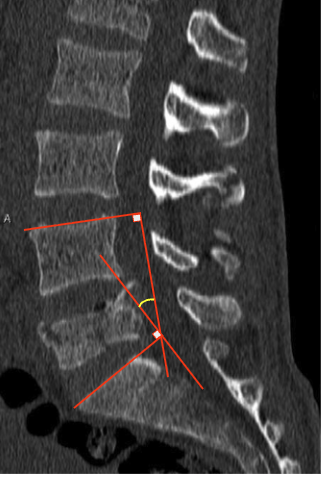

Adapted from: Niknejad M, Burst fracture. Case study, Radiopaedia.org (Accessed on 05 Jan 2026) https://doi.org/10.53347/rID-93541
1) Description of Measurement
The Kyphotic Angle measures the degree of segmental kyphosis across a fractured lumbar vertebra using the Cobb method. It reflects the angular deformity created by vertebral body collapse and is a key indicator of fracture instability, progression of deformity, and need for surgical correction.
2) Instructions to Measure
Imaging Requirements
Step-by-Step
3) Normal vs. Pathologic Ranges
Progressive increase on serial imaging suggests instability.
4) Important References
Denis F. The three column spine and its significance in the classification of acute thoracolumbar spinal injuries. Spine (Phila Pa 1976). 1983 Nov-Dec;8(8):817-31. doi: 10.1097/00007632-198311000-00003.
Meves R, Avanzi O. Correlation among canal compromise, neurologic deficit, and injury severity in thoracolumbar burst fractures. Spine (Phila Pa 1976). 2006 Aug 15;31(18):2137-41. doi: 10.1097/01.brs.0000231730.34754.9e.
Patil S, Nene AM. Predictors of kyphotic deformity in osteoporotic vertebral compression fractures: a radiological study. Eur Spine J. 2014 Dec;23(12):2737-42. doi: 10.1007/s00586-014-3457-x.
5) Other info....
Kyphotic angle should be measured in conjunction with:
Progressive kyphosis >10° over time is a red flag for delayed instability.
CT provides more accurate endplate definition than plain radiographs in acute trauma.